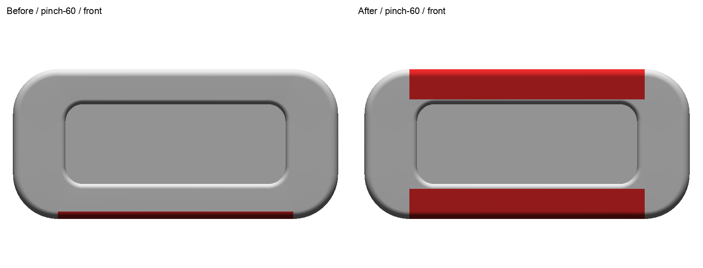
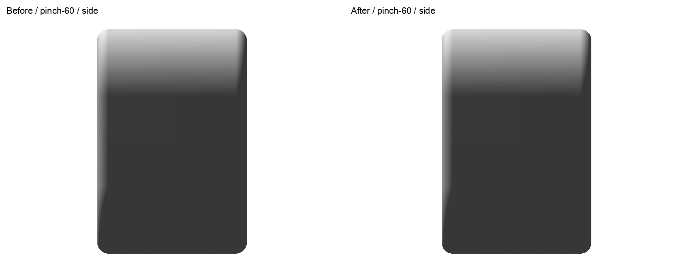
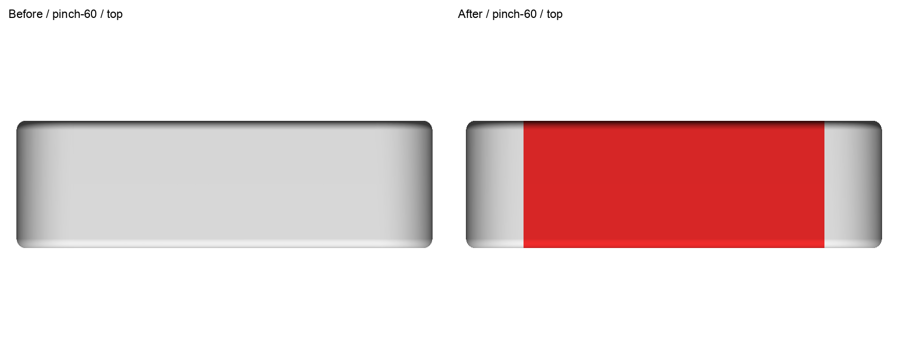
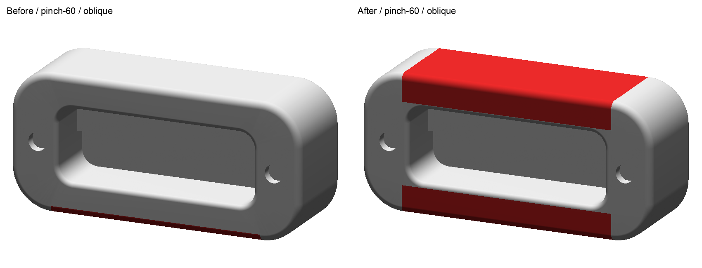
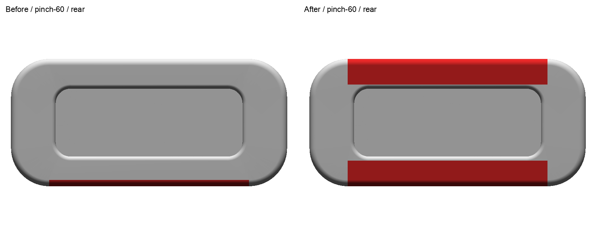
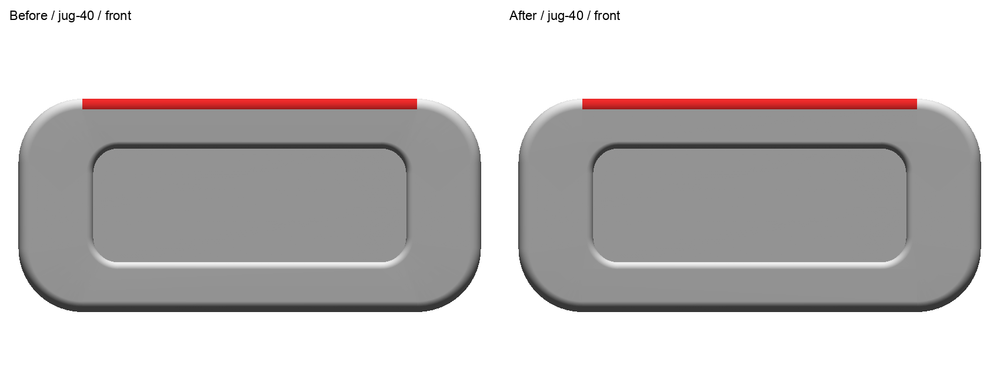
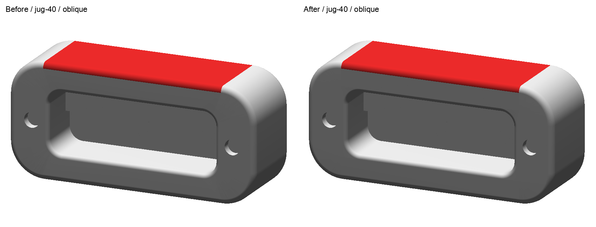
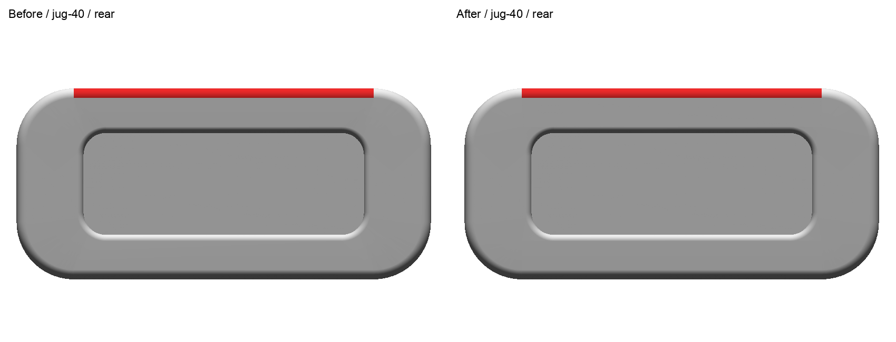

README · Final front/rear/oblique extent · Inspection · Before evidence
Before left / after right. Red comes from exact descriptor node membership. Pinch selects upper and lower bands wrapping onto front and back. Side/end rims, pocket interiors and cord wells are excluded. Jug retains its original upper patch. Whole native solid unchanged. Independently imported before/after meshes, common paired camera and scale. Technical previews; human review pending.
Pinch overview · Jug overview · Provenance







